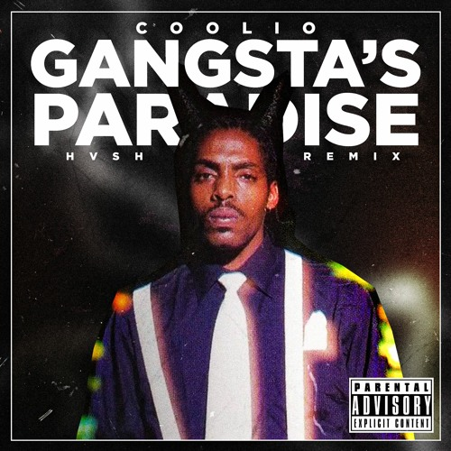
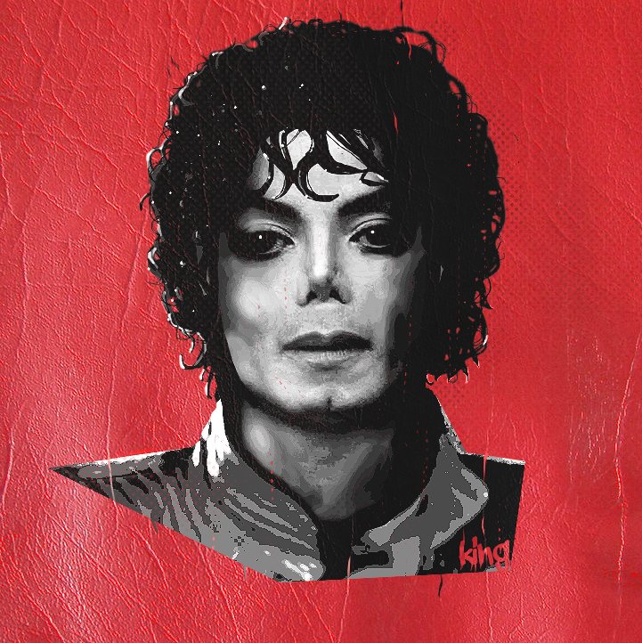
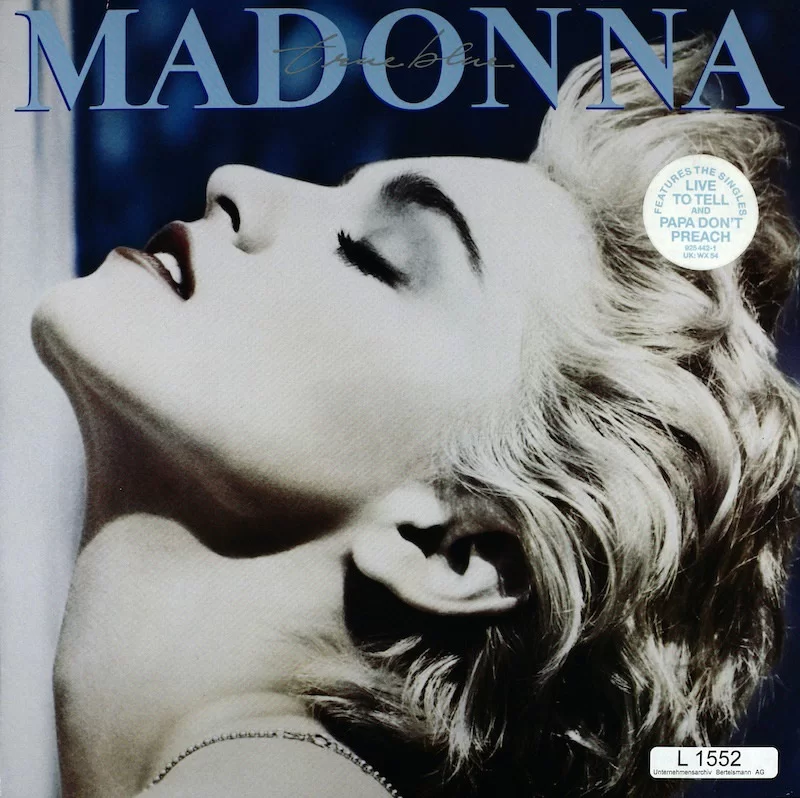
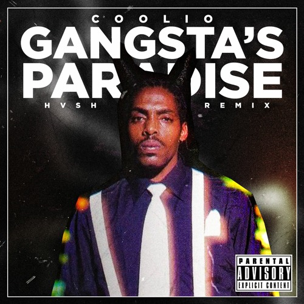
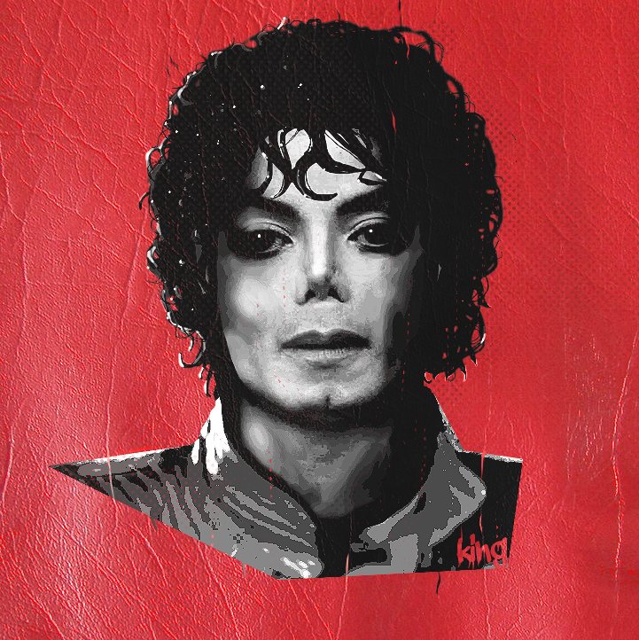
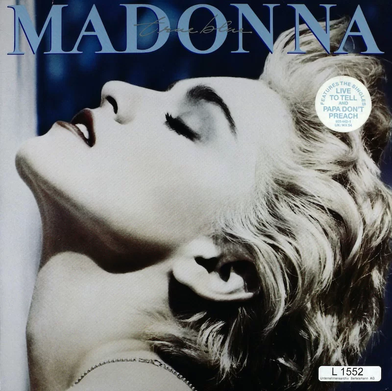

OG's Melodies
 





The music of the 1980s was a magnificent symphony that encapsulated a whole generation. It was a period when synthesizers and electric guitars danced together, and lyrical poetry was mixed with pulsing beats. The melodies of the 1980s were more than simply songs; they were anthems of tenacity, optimism, and uncontrolled emotion. They talked to dreamers, rebels, and those looking for a better tomorrow. From Michael Jackson's legendary pop to Queen's rebellious rock, the 1980s left an unforgettable impression on our hearts and souls. It reminds us that in the face of adversity, we can find our rhythm, rise above, and create a memorable, neon-lit masterpiece in our life.
Accept the energy of the 1980s, relive the moments and use it to power your path to a greater and more colorful future.